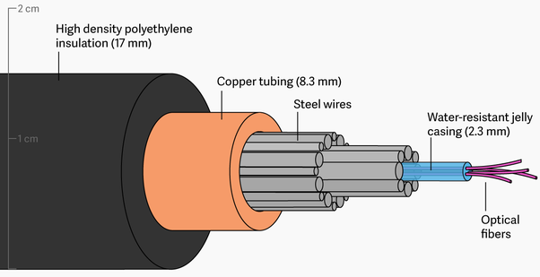

Overview
Fiber Optic Internet is internet delivered through a fiber optic cable connection.
It works by sending signals, through beams of light, through the glass of the optical fibers that make up the cable.
How it works
Fiber-optic cables are made up of small strands of glass-like material.
These strands, called optical fibers, are put together with other optical fibers to make the bigger fiber-optic cable.
The optical fibers have two parts, the core and the cladding.
The core is made of glass and is the part that the light passes through.
The cladding is made from a thicker glass and it surrounds the core like an insulation.
In fact, the cladding is partly responsible for keeping the light signals inside the core.

Fiber-Optics also appear in the medicine field.
Medical gadgets that could help doctors peer inside our bodies without cutting them open were the first proper application of fiber optics over a half century ago.
Today, gastroscopes (as these things are called) are just as important as ever, but fiber optics continues to spawn important new forms of medical scanning and diagnosis (ExplainThatStuff).
Speed comparison
DSL was revolutionary at its time of release.
It was made to work better and faster than the previous technology used (Dial-Up).
DSL, like dial-up, used the telephone network and lines to connect to the internet.
Then came cable internet.
Cable internet was maded to be faster and to work better in comparison to DSL.
Cable internet uses coax cables and cable networks to connect to the internet.
At last, cable internet couldn't keep up with demand, so fiber has since been introduced
Fiber is the latest and fastest communication technology.
Fiber also allows for upload and download speed to be symmetric, unlike the previous technologies
The speed differences between DSL, cable, and fiber can be seen on the table below
| |
Fiber |
DSL |
Cable Internet |
| Download Speeds |
250 - 1000 Mbps |
5 - 35 Mbps |
10 - 500 Mbps |
| Upload Speeds |
250 - 1000 Mbps |
1 - 10 Mbps |
5 - 50 Mbps |